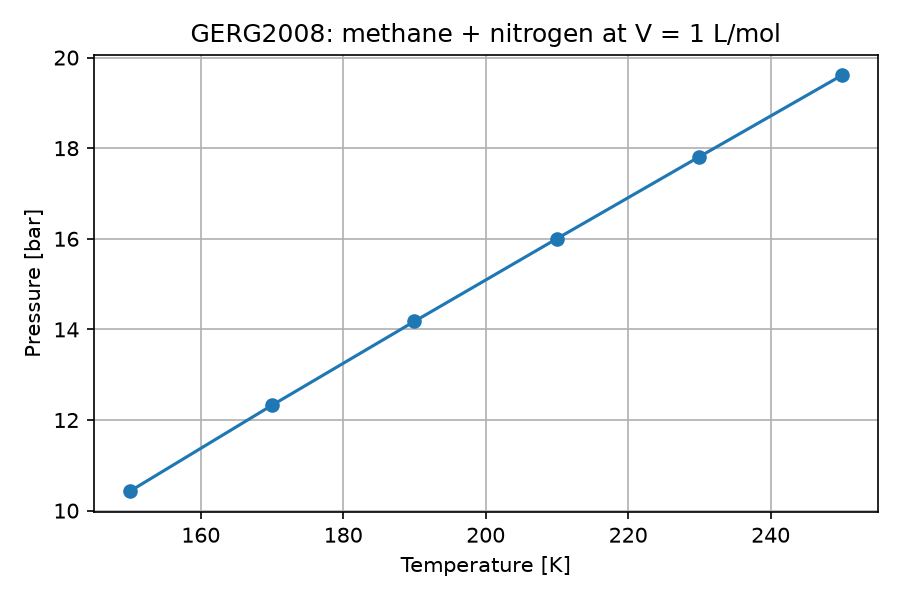

The GERG2008 equation of state is a multifluid model for natural-gas mixtures. It is based on the reduced Helmholtz energy and is the reference model of the GERG2008 monograph by Kunz and Wagner.
Use it when your mixture is built from the 21 components the model supports and you want a well-documented reference calculation without assembling critical constants, binary interaction parameters or a mixing rule yourself. Compared with a cubic EOS, the model is more expensive to evaluate and it comes with a fixed parameterization: you cannot supply your own pure-component or binary data.
This page explains what the model computes, what data it needs (very little), how to build it, and how to read its results.
An equation of state relates pressure, volume and temperature. A Helmholtz
energy model stores the same information in a thermodynamic potential whose
derivatives give the other properties. yaeos uses the residual Helmholtz
energy : the difference between the real fluid and an ideal gas at the
same amount, volume and temperature.
Let be the amount of component in mol, the total amount, the mole fraction, the absolute temperature in K, and the total volume in L. The residual Helmholtz energy is
where is the dimensionless reduced residual Helmholtz energy and is the gas constant in bar L/(mol K). The reduced density and reduced inverse temperature are
with the molar density in mol/L, the reducing density in mol/L, and the reducing temperature in K (not the reduced temperature used on the cubic pages). Each pure fluid keeps its own accurate Helmholtz equation, and the composition-dependent and combine them into a mixture: this is the “multifluid” idea.
The implementation splits the reduced residual energy into a pure-fluid part and a binary departure part:
where is the number of components. The are the tabulated pure-component residual Helmholtz energies of component , and is the departure function of the pair . The dimensionless factor scales a pair’s departure function; it is zero for pairs that have no departure function, in which case the pair contributes nothing to this sum.
The reducing volume (L/mol) and reducing temperature (K) are built from the pure-component critical data and the binary reducing parameters :
Here is the critical volume of component in L/mol, its critical temperature in K, and its critical density in mol/L. Every binary pair has reducing parameters, so the mixture critical behavior changes with composition even when no departure function is present.
Only some pairs carry a binary departure function. In the tabulated data the following pairs have one (the numbers are the internal GERG2008 table indices, listed in the component table further down; the coefficients of each function are on the GERG2008 parameters page):
| Pair | Components | |
|---|---|---|
| 1-2 | methane + nitrogen | 1 |
| 1-3 | methane + carbon dioxide | 1 |
| 1-4 | methane + ethane | 1 |
| 1-5 | methane + propane | 1 |
| 1-6 | methane + n-butane | 1 |
| 1-7 | methane + isobutane | 0.771035405688 |
| 1-15 | methane + hydrogen | 1 |
| 2-3 | nitrogen + carbon dioxide | 1 |
| 2-4 | nitrogen + ethane | 1 |
| 4-5 | ethane + propane | 0.130424765150 |
| 4-6 | ethane + n-butane | 0.281570073085 |
| 4-7 | ethane + isobutane | 0.260632376098 |
| 5-6 | propane + n-butane | 0.0312572600489 |
| 5-7 | propane + isobutane | -0.0551609771024 |
| 6-7 | n-butane + isobutane | -0.0551240293009 |
For every other pair (for example methane + water, methane + n-pentane, carbon dioxide + water, or anything involving helium or argon) the mixture interaction is described only by the composition-dependent reducing functions. This is a property of the parameterization, not a numerical failure, and it is worth knowing before using the model for a mixture that relies on a strong unlike attraction, such as a water-bearing gas.
The only input the model needs is the list of components. Pure-component coefficients, binary departure functions, binary reducing parameters and the critical constants all come from the built-in GERG2008 tables, listed in full on the GERG2008 parameters page. The model type is Gerg2008 and it is built with gerg_2008.
The identifiers are fields of the public object G2008Components:
| Identifier | Component | Identifier | Component |
|---|---|---|---|
methane |
Methane | nonane |
n-Nonane |
nitrogen |
Nitrogen | decane |
n-Decane |
carbon_dioxide |
Carbon dioxide | hydrogen |
Hydrogen |
ethane |
Ethane | oxygen |
Oxygen |
propane |
Propane | carbon_monoxide |
Carbon monoxide |
nbutane |
n-Butane | water |
Water |
isobutane |
Isobutane | hydrogen_sulfide |
Hydrogen sulfide |
npentane |
n-Pentane | helium |
Helium |
isopentane |
Isopentane | argon |
Argon |
nhexane |
n-Hexane | ||
nheptane |
n-Heptane | ||
noctane |
n-Octane |
Note
The component names are fields of G2008Components, not integer constants.
Use G2008Components%methane, for example, not methane.
The order of the identifiers is the order of the model. Every composition vector, amount vector and property result follows that order. Listing the same components in a different order gives a different model object, so build the identifier list once and reuse it; do not reorder it between calls.
The public API uses mol, total L, K and bar, exactly like the other models.
The critical data of the selected components are available afterwards through
model%components%tc (K), %pc (bar), %w (acentric factor) and %vc
(L/mol), which is useful when you want to see what the model believes about a
component.
This program builds a methane + nitrogen model, evaluates a homogeneous state,
and then asks a separate solver for the bubble point at the same temperature.
At a bubble point the input amounts describe the liquid phase, and sat%y
is the incipient vapor composition.
program gerg_example
use yaeos, only: pr, R, Gerg2008, gerg_2008, G2008Components
use yaeos, only: EquilibriumState, saturation_pressure
use, intrinsic :: ieee_arithmetic, only: ieee_is_finite
implicit none
type(Gerg2008) :: model
type(EquilibriumState) :: sat
real(pr) :: n(2)
real(pr) :: T
real(pr) :: P
real(pr) :: V
real(pr) :: Pideal
real(pr) :: Z
! Methane first, nitrogen second: this fixes the component order.
model = gerg_2008([ &
G2008Components%methane, &
G2008Components%nitrogen &
])
n = [0.9_pr, 0.1_pr] ! mol; total 1 mol, so x = [0.9, 0.1]
T = 150.0_pr ! K
V = 1.0_pr ! total L
call model%pressure(n, V, T, P)
if (.not. ieee_is_finite(P)) error stop "Nonfinite pressure"
Pideal = sum(n)*R*T/V
Z = P/Pideal
print *, "Pressure [bar]: ", P
print *, "Compressibility Z [-]: ", Z
sat = saturation_pressure(model, n, T, kind="bubble")
if (.not. ieee_is_finite(sat%P)) error stop "Nonfinite bubble pressure"
if (sat%P <= 0.0_pr) error stop "Invalid bubble pressure"
if (.not. all(ieee_is_finite(sat%y))) error stop "Nonfinite vapor composition"
print *, "Saturation pressure [bar]: ", sat%P
print *, "Vapor composition: ", sat%y
end program gerg_example
How to read this output:
pressure evaluates the equation of state at a volume you choose; the
saturation routine searches for the state where liquid and vapor coexist.This complete program evaluates pressure at a fixed volume over a range of temperatures. It is a model evaluation only: it does not look for phases.
program gerg_density_scan
use yaeos, only: pr, Gerg2008, gerg_2008, G2008Components
implicit none
type(Gerg2008) :: model
real(pr) :: n(2)
real(pr) :: V
real(pr) :: T
real(pr) :: P
integer :: i
model = gerg_2008([ &
G2008Components%methane, &
G2008Components%nitrogen &
])
n = [0.9_pr, 0.1_pr]
V = 1.0_pr
do i = 0, 5
T = 150.0_pr + 20.0_pr * real(i, pr)
call model%pressure(n, V, T, P)
print *, "T =", T, "K, P =", P, "bar"
end do
end program gerg_density_scan

This figure is a scan of the model at one volume. It is an illustration of the API, not a validation dataset: compare the curve with experimental data for the mixture before drawing conclusions from it.
Gerg2008 extends ArModelAdiff, so all the standard ArModel methods are
available, including pressure, volume, lnphi_pt, the residual property
routines and the phase-equilibrium routines.
The model is evaluated with automatic differentiation using hyperdual numbers, so first and second derivatives with respect to amount, volume and temperature come from the same code path.
The volume method is specialized: it uses a Newton solver in log-volume,
initialized with the Soave-Redlich-Kwong volume. This is necessary because the
GERG2008 Helmholtz function does not provide a simple analytical covolume. The
root selection "liquid", "vapor" and "stable" behaves as in the other
models: "stable" compares the Gibbs energy of the two roots.
The model overrides ln_activity_coefficient: each pure-fluid reference is
evaluated with a separate one-component GERG2008 model.
Useful checks on a first run:
sum(n)*R*T/V and .model%components%tc and %pc come from the tables,
not from your input, and are a quick way to confirm that the right
components were selected.volume, call pressure with the returned
volume and compare with the requested pressure.Pitfalls specific to this model:
gerg_2008. If you need them, use a
model that accepts them, such as a cubic EOS with mixing rules or PC-SAFT.These are different failures and deserve different responses:
| Symptom | Likely cause | What to do |
|---|---|---|
| Volume solve returns | Newton iteration did not converge | Check that the state is inside the model’s range; try a different root_type |
| Bubble or flash routine fails to converge | Phase-equilibrium solver, not the model | Supply better initial guesses (p0, y0, t0) or a better starting state |
| Converged but implausible result | Model or parameters unsuitable for the system | Compare with data; check the component set and the pair coverage listed above |
app/gerg_properties.f90 contains a runnable property calculation.